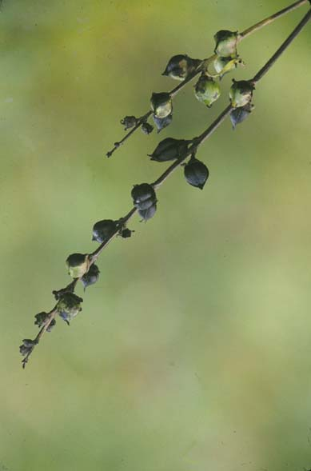
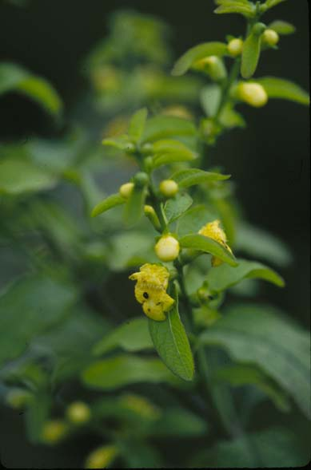
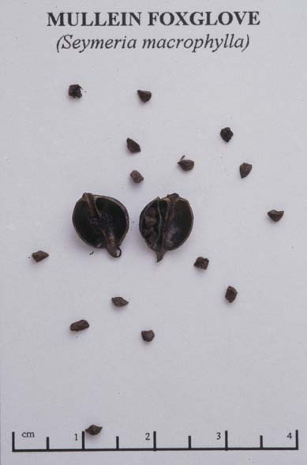

Seymeria Macrophylla
Family: Scrophulariaceae
Mullein Foxglove
Swink/Wilhelm # 8


Click to view larger photo
FLOWERING: Mid-July to early September
SEED TIMING: October
HABITAT: Dry woods and edges of prairies
DIAGNOSTIC FEATURES: 3 - 6 feet. Smooth, branching annual. Light green leaves, leafy spikes of pale yellow, stem-hugging, tubular blossoms.
TO PICK: Dark brown, pea-sized seed capsules cling to dark upper branches well into winter. Capsules contain many tiny black seeds. Use gloves to strip capsules off the stems or snap off entire stem to process at a later time.